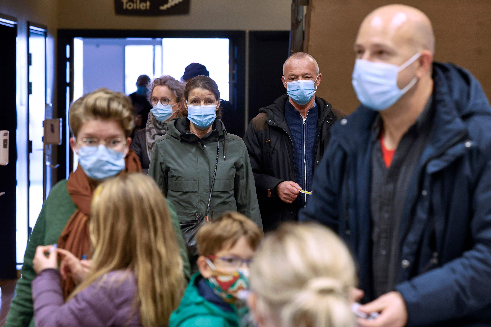

Health experts dispute conservatives’ claim that new study finds masks are ineffective
Public health experts are raising alarms about a study that some conservatives claim reveals that masks are ineffective at preventing the spread of the novel coronavirus.
Even the lead researcher argues that such an assertion is misconstruing science, while other public health experts assert that the study has serious design flaws.
Mask-wearing has remained a hot-button political issue even as more states, including those with Republican governors who long resisted such measures, are adopting mask mandates as case numbers rise across the United States.Numerous studies have found that masks, and perhaps even the mandates, reduce the risk of transmission.
'Masks have been shown to protect others and, despite the reported results of this study, probably protect the wearer,' former Centers for Disease Control and Prevention director Tom Frieden wrote in an editorial that laid out what he sees as the various limitations of the study.
In the large, randomized study published Wednesday in the Annals of Internal Medicine, researchers observed more than 6,000 people in Denmark from April to June when mask-wearing was not required in the country.Fewer people in the group that was advised to wear masks contracted the virus — or about a 14 percent reduced risk because of mask-wearing — but the difference was not statistically significant, indicating that the recommendation to wear the medical masks issued was not particularly effective at preventing the wearers from being infected.Other experts, however, argue that the study was conducted when there was relatively less community spread of the virus and that testing the participants’ antibodies cannot reliably measure whether they had the virus during the time of the study.
'We think you should wear a face mask at least to protect yourself, but you should also use it to protect others,' lead author Henning Bundgaard told The Washington Post.'We consider that the conclusion is we should wear face masks.'
Bundgaard said even the small risk reduction that masks offer 'is very important, considering it is a life-threatening disease.'
That’s not how conservative circles interpreted the study.Online, commentators and elected officials who have argued against mandating masks construed that the results supported their beliefs.Even before the paper was published, the search term 'Danish mask study' spiked on Google as an unfounded theory had spread that other credible scientific journals had declined to publish the research because liberal scientists were keeping the study under wraps.The Lancet, the New England Journal of Medicine and JAMA told The Post it was policy not to comment on papers the journals did not publish.
The simple act of wearing a covering over one’s mouth and nose has become particularly divisive as some question the changing recommendations issued by top health organizations.
The CDC revised its guidance last week to say that the wearer can benefit from a face covering that filters out the droplets carrying the virus.The health agency, which has urged Americans to mask up to protect others since the summer, cited multiple studies evaluating mechanical evidence that concluded that masks can block certain respiratory particles, depending on the material of the mask.
The agency referred to a study by Japanese researchers that found 'cotton masks, surgical masks, and N95 masks had a protective effect.'Other research has hypothesized that masks can filter out some of the virus-carrying particles, reducing the viral dose and how ill the wearer may become.In a report released Friday, the CDC concluded that average daily case numbers decreased in 24 Kansas counties that imposed mask mandates over the summer, while 81 counties that did not require masks recorded increases.
Another study referred to by the CDC in its update about the benefit for wearers, led by Eugenia O’Kelly, a doctoral candidate at the University of Cambridge’s engineering department, found increasingly common fabric face masks blocked a range of ultrafine particles.
'I think the overwhelming body of evidence suggests that masks are effective,' O’Kelly said in an interview.'The question comes down to how effective.'
O’Kelly said how people choose to wear their masks can play a large role in their value.The Danish study does not make clear how well people wore the 50 medical-grade masks they were issued but indicates that the participants used more than one a day on average.
Proper education about how to wear masks and how efficient they can be has been hampered by the divisiveness over policies that require them.
'Because the issue has become so politicized, there’s a real risk — and it’s already being used in this way — that studies like this will be sort of cherry-picked and presented as conclusive evidence that masks are completely ineffective,' Columbia University virologist Angela Rasmussen said.
With an intense media fixation on all new research coming out about the virus that has dominated the globe, Rasmussen and other experts worry that pre-peer-reviewed, or even peer-reviewed, studies are seized upon uncritically and taken out of context.
'Science is a method,' Rasmussen said.'Just because it comes out in a peer-reviewed journal, that doesn’t mean it’s settled.All studies have their limitations, and the peer-review process itself has its limitations.'
In letters and blog posts, public health experts express concern about the design of the study and warn that policymakers could misinterpret the research to mean that masks are ineffective.
'However, the more accurate translation is that this study is uninformative regarding the benefits (or lack thereof) of wearing masks outside of the healthcare setting,' one letter states.'As such, we caution decision-makers and the media from interpreting the results of this trial as being anything other than artifacts of weak design.'
Posted On: 2021-04-19T00:00:00

Content Date: 2021-04-19
Download Date: 2021-05-13
Document ID: L0C04BZC8